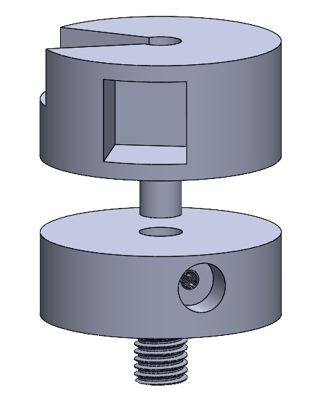
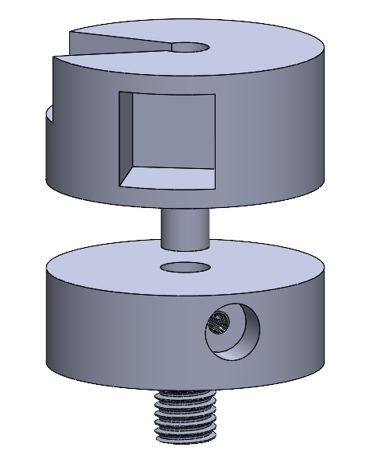

Projects

My Porfolio
Personal Project
January 2025 - Present
What and Why?
I made this portfolio to give potential employers an opportunity to learn more about me and showcase some projects that I’ve worked on.
Process
I originally intended to use libraries like React JS or a framework like Tailwind CSS, but I eventually settled for basic HTML, CSS, and Javascript because I didn’t think there were going to be a lot of reusable components. I had some trouble with the home page because I didn’t understand CSS well enough, but after looking into flexbox and CSS cheat sheets, it was pretty easy to design the rest of the website. I chose to host the website on github because it was free, easy, and taught me a little bit about how github works.
Results & Possible Improvements
The web page looks good at the intended aspect ratio and 100% zoom, but breaks down at different aspect ratios and zooms. I could improve this in the future by adding some conditional code to handle different zooms or aspect ratios in Javascript, or making the design more vertical to accommodate mobile views. I intend to continue updating this page with future projects I work on. If you are intrested, be sure to check out my code on Github
GALINT
Northeastern Combat Robotics Club
September 2024 - March 2025
What and why?
GALINT is an 1 pound combat robot for the plastic ant combat robotics league. The robot has a vertical drum spinner design with two foam wheels in the back.
Design & Planning
The final design included 5 3D printed parts, a weapon, frame, top plate, and a spacer for the bearing and weapon mount. I measured the size of all the electronics and tried to make the frame as small as possible so I could make the weapon as large as possible. I also physically weighed everything on a scale or found the theoretical weight shown on the 3D printer slicer software to make sure I satisfied the weight requirement.

Fabrication & Assembly
I soldered a circuit involving a weapon ESC, drive ESC, a weapon motor, 2 drive motors, a switch, and a receiver using a circuit diagram one of the club leads made. I 3D printed everything out of super PLA plus and put heat-set inserts on the top plate and frame. Additionally, I 3D printed a spacer for where the weapon motor mounts and a spacer for the bearing so that the weapon would fit better in the design. I had to make a couple 3D printed prototypes to make sure the design fit together properly.

Results & Possible Improvements
The robot passed the test to qualify for the competition, which involved testing the drive, weapon, and weapon lock. When the robot actually competed, it had an issue where the weapon would slow down every time it drove. This might’ve happened because the battery wasn’t charged enough, or because something was wrong with my weapon motor, which I noticed was abnormally hot to the touch after competing. For next time, I want to place the drive motors closer to the center of mass of the robot to improve it's drive functionality.
Smart Step
Forge Product Development Lab
September - December 2024
What and why?
After doing research on causes of injury amongst elderly people, my forge team and I found that most injuries are caused while navigating stairs. Traditional canes do little to help since using them to navigate stairs can be awkward and difficult for elderly people. To try to prevent injuries, we designed Smart Step, a cane with a height changing mechanism. I was tasked with designing the body section of the tube, which involved a height changing mechanism.
Design & Planning
The design involves a telescopic actuator mechanism, with an aluminum threaded rod in the middle that is connected to a motor at the top, allowing it to rotate. The lower body tube is constrained to translational motion by a glider that runs along a thin aluminum rod acting as a track. A 3D printed piece on the bottom of the upper body tube holds the thin aluminum rod, and 4 3D printed parts hold 2 threaded nuts in place on the lower body tube, allowing the nuts to interface with the threaded aluminum rod.
Fabrication & Assembly
We ordered the Aluminum parts and the PVC body tubes online. I 3D printed all of the other parts and used screws to assemble the body. For the inner body tube, I used a drill press with a smaller and larger tool to make the screws flush with the exterior of the tube. I also designed a piece to hold the motor down so that it wouldn’t get pushed out of place when force was applied.
Result & Possible Improvements
It took about 9 seconds for the cane to fully extend from a contracted position, which is too slow for elderly people to use. To cut costs, we used a motor that we found in a scrap motor bucket at a makerspace. If I were doing the project again, I would put more thought into selecting a motor based on torque and speed requirements. Additionally, getting an aluminum rod with a larger pitch could also help increase speed (while also increasing the required torque).
Subscale Rocket
Nasa Student Launch Initiative
September - November 2024
What and Why?
The purpose of this project was to build a subscale rocket for the Nasa Student Launch Challenge. My role in the project was making a prototype in OpenRocket software, and later designing the fin can for the rocket.
Design & Planning
I simulted the flight of the 4.85 foot tall rocket in OpenRocket, making changes to the rocket’s design to maximize the rocket’s stability, apogee, flight time, and minimize ground hit velocity. Unfortunately, my OpenRocket model wasn't chosen by the club lead to serve as the plan for the rocket.

Once we decided on an OpenRocket model to use, we each began making fin cans for the motor section of the rocket. I designed a few prototypes for the fin can, attempting to minimize weight, maximize strength, and increase ease of assembly.

Once we decided on an OpenRocket model to use, we each began making fin cans for the motor section of the rocket. I designed a few prototypes for the fin can, attempting to minimize weight, maximize strength, and increase ease of assembly. Here are some of my prototypes:
Fabrication
I 3D printed 3 prototypes and fitted them to the inner body and outer body tube of the rocket. I also tested the strength of the fin can by applying force to the fins. Here are some pictures of 3D prints.
Result
Here is a picture of my final fin can, which wasn't selected for the final design of the rocket. The fins mount in 3 places and two holes mount the can to the exterior body tube with heat set inserts (i never bothered to put them in since the design wasn't selected). The rest of the holes are for screws mounting the fin can to the interior body tube. If I were to make another prototype, I would try to decrease the number of screws needed to make assembly easier.
Material Testing Mount
DeLTA Lab
October - November 2024
What and why?
My task was to design a Vacuum-compatible magnetic sample holder with rotational and height adjustment for an optical spectroscopy experiment. The holder needed to allow a laser to enter in one direction, and be emitted out in a perpendicular direction by the sample. I worked on this project under the supervision of the professor managing the lab.
Design & Planning
I originally made a design where the laser hits the sample from the front and exits to a side plane, but when the professor updated me on the design he said it needed to emit the laser out of the top plane because of the experiment conditions. The K-shaped holder was the first prototype and the circular one is the final project. For the final project, an adapter connects the holder to the experiment setup, and a small screw holding the actual material mount in place. Both designs have magnets on either side of the sample.
 

Fabrication & Assembly
The professor and I got a quote at Xometry for the lower piece and we 3D printed the upper piece. We ordered the two magnets off the internet.
Result
The experiment the mount was designed for hasn’t happened yet, so I won’t know about what can be improved until the mount gets used.